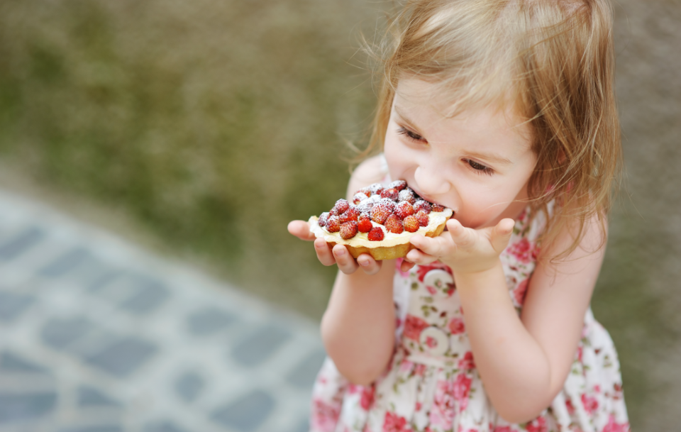
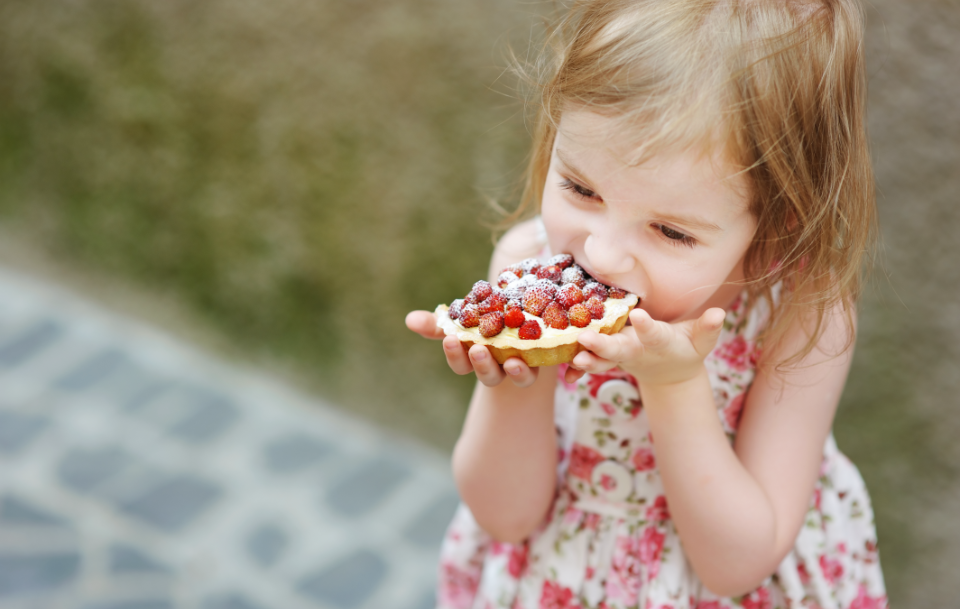

Dairy
Our fruit preparations are available in an amazing array of different flavours, so you can surprise your clients over and over with new products. Our Fruit Preparation solutions are the best complement to dairy & plant based desserts and include an extensive array of flavours from local regional Greek fruits to tropical multi-fruit combinations.
 
